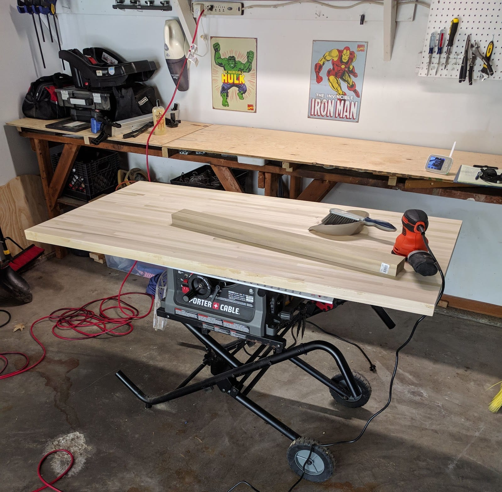
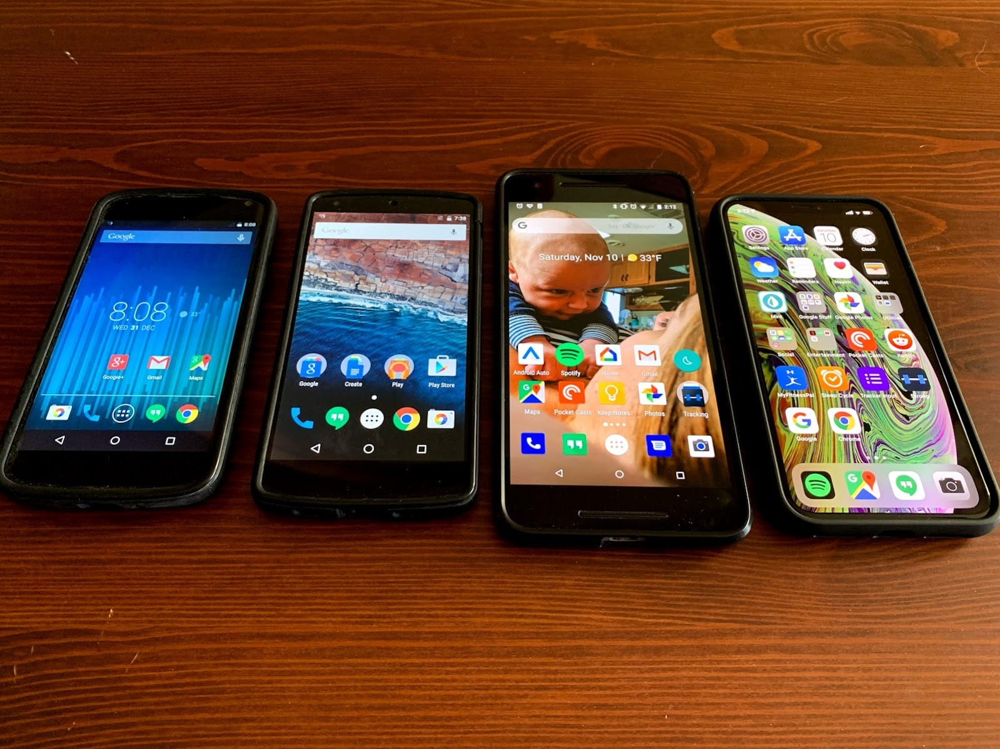
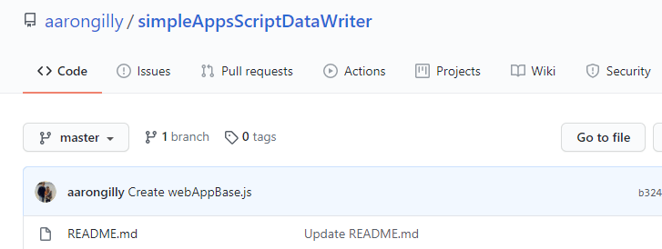

Preamble
The things we use to shape our craft also shape our lives. We are a product of the toolset we choose, just as much as the creations we make with them. I think that’s why I’ve been interested in “EDC” culture for a long time. I’ve spent a lot of time thinking about tools, looking at possession fetish sites (Timbuk2’s site, /r/whatsinthebag, /r/onebag, and /r/EDC all come to mind.
Why this Post Exists
I use a lot of things for a lot of reasons. Some of my tools are indispensable, and some I use through gritted teeth. Now that I’ve built a central location (/portfolio, I guess?) to track the things I create, I thought it would be helpful to keep track of the tools I used to create them. This was primarily so that I could quickly recall which coding projects I used which frameworks/toolsets/libraries on, so that I could reuse my own work… but after putting together the list I realized it may be helpful to anyone interested.
Tools
Physical
Wood shop

- Table saw
- Circular saw
- Jigsaw
- Radial sander
- Standard hand tools
Tech

Computers
- iPad Pro 12.9 (4th Gen)
- Windows Desktop (custom build, aging)
- Samsung Chromebook Plus
- iPhone 11
- Apple Watch (1st Gen)
Capture Devices
- GoPro 7
- Canon EOS Rebel T6
- Apple Pencil
- Apple Smart Keyboard Folio
- Audio Technical ATR2100 microphone
- Oura Ring
Digital
Development Tools
- HTML/CSS/JavaScript
- NodeJS + Express
- TypeScript
- React
- jQuery
- Bootstrap
- MongoDB + Mongoose
- MongoDB.com - Mongo host
- Google Apps Script + Google Sheets
- Visual Basic for Applications + Excel
- Jekyll
- shout out to Minimal Mistakes
Software & Applications

All Platforms / Cloud
- Gmail/Google Calendar - email and calendar
- Notion - notes & life management
- Todoist - task management
- Jump Desktop - remote desktop client
- Plex - personal media library
- Glitch - full stack development in-browser & lightweight hosting for web apps
- IFTTT - automatic quantified self tracking
- Libby - getting & reading books
- Also: Axis360 & RB Digital - but Libby is easily the best
- Spotify - music streamer of choice
- Pocketcasts - podcast application of choice
- Google Photos - photo managing
- Google Drive - main cloud application
- iCloud - backups for devices + some other cloud stuff
- LastPass - password manager
- Pocket - online article collection & reading
Windows 10
- Visual Studio Code - coding
- Sony Movie Studio Platinum 15 - video editing & lightweight audio editing
- No link here because I don’t really recommend this program, it’s just what I have
- Handbrake - video transcoding
- MakeMKV - movie backup
- Audacity - audio recording & hopefully soon audio editing
iOS and iPadOS
- Procreate - making drawings & comics & (someday) animations
- Working Copy - Git client/writing app
- GoodNotes 5 - notes & doodles, use in conjunction with Notion
- Streaks - habit tracking
- Shortcuts - lots of stuff, but mainly Lifeline Journal inputs
- Data Jar - iOS Shortcuts enhancer
- Shapr3D - CAD
- Mint - money tracking
- Strong - weightlifting app of choice
- Some Subset of these: YouTube, Netflix, Hulu, HBO Max, Disney+, Amazon Prime, Apple TV+
Archive/Out-of-Use Tools
- Scriptable - iOS Shortcuts enhancer
- Toolbox Pro - iOS Shortcuts enhancer
- Codepen.io - front end development in-browser
- Android - nearly a decade of Android devotion
- Android Studio - no longer on Android, so no longer interested
- Inbox by Google - killed by Google
- Google Reader - killed by Google
- Google Play Music - being killed by Google
- Google Tasks - killed by Google (eventually brought back, but whatever)
- Google Fit - never grew into anything worthwhile
- Google Keep - lacking desired functions
- Chrome Remote Desktop - Jump is much better on the iPad
End list.
Final Words
I don’t intend to keep this Column entry up-to-date with my current toolset. It’s a snapshot as of 2020-09-12. I do plan, for the foreseeable future, to keep the Notion page this Column was written in up to date.
De-Googling
One thing you may notice is the group of Google-related services in the “Out-of-Use” section. Google has historically been a massive, massive part of my life (“Google” used to be one of the tags I’d use for Columns). As time has gone on, though, and as Google has grown - I no longer revere the company as some sort of pseudo God (trigger warning for any fundamentalist religious types, that link is very much meant as a joke). I’ve seen Google make too many mistakes…
Airing of Grievances
- I have had too many tools I liked using yanked out from under me
- Most Google services I’ve been interested in never lived up to their potential
- I’ve grown sick to death of saying “Okay Google”
Long story short - yeah Google is pretty great… but not infallible.
Top 5: Digital Subscriptions I Currently Have
- Netflix - $13/mo (standard) - it’s Netflix. What are you going to do, not have Netflix?
- Spotify Premium Family - $15/mo - simply the best music subscription service. Would be nice if they offered anything beyond “streaming audio content”… but it’s a price we’re willing to pay.
- Google One - $10/mo for 2TB - this is essentially just Google Drive, but they wanted to make it sound like more than that.
- LastPass Family - $4/mo - Password Manager. Very worth it.
- Glitch - 5/mo - hosts my Podcasts Notion - $4/mo - hosts my notes & a lot of other stuff… although at this point they made the free version of it incredibly capable, paying isn’t really necessary for the normal user
- Amazon Prime - $10/mo (basically) - Amazon Prime is essentially a no-brainer for most of America. You could live pretty comfortably with ONLY an Amazon Prime subscription. They’ve got Prime Video (which has the best selection of kids shows), prime Music, a photo storage service, AND the free shipping. At this point I sort of see Amazon Prime’s annual subscription cost sort of like “paying taxes”, only instead of getting the privilege to have a military that protects us and a school system and whatnot, we get all the Amazon benefits. Same thing could be said of my Costco membership, but that’s a different Top 5.
Top 5: Digital Subscriptions I Don’t Have, but Probably Should
- HBO Max - $15/mo - this streaming service is a direct competitor to Netflix, and its catalog is incredible.
- Dropbox - $10/mo for 2TB - I use Google Drive, but man do I like Dropbox. It was my first introduction to “the cloud”. Also their “Paper” online document editor, while not as robust as Google Docs, is satisfying to use. It’s a shame that right now Google Drive is sufficing for everything I use - and more and more we’re locked into it.
- Apple Arcade - $5/mo - a subscription service that nets you access to a curated library of iPhone & iPad games, all of which are free from ads & microtransactions. When my kid gets older, this is 100% happening if it’s still around.
- YouTube Premium - 18/mo (family) - YouTube without ads. YouTube downloads. Also Google’s Spotify competitor “YouTube Music”. If this wasn’t nearly $20/mo we’d probably opt in. Also if Spotify wasn’t so good. Also also if I weren’t 80% confident Google will see a squirrel and drop this service entirely.
- The Hulu/Disney Plus/ESPN bundle - $13/mo - Hulu and Disney Plus, what else could you want? Honestly with the inclusion of ESPN here, how does ANYONE have cable still? It’s either lack of good internet or fear of change. There’s no reason to not be a cord-cutter anymore.
Quotes
Faster Alone, Further Together.
African Proverb
He bounces around like a ping pong ball in a hurricane.
My Dad